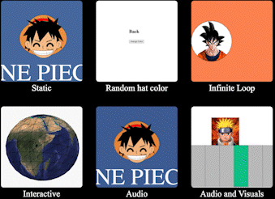

Overview and Usage
- This p5.js coding have final sketch gallery and include a sketch in different categories:
- Static, Random, Infinite Loop, Interactive, Audio, Audio and Visuals

Gallery Gif
Development Process
- Set up the javascript.
Find the recourses online, edit them in the p5js web editor. Then, save these coding into the javascript -
Set up the HTML and CSS page for gallery
Link stylesheet href to css page. Adding the gif for each category - Set up the HTML and CSS page for each sketch
Set navigation that back to gallery page. Link script src to javascript page.

p5js web editor page
p5js web editor page
Gallery's HTML
Sketch's HTML

Sketch's CSS
Issue Deep-Dive
- The problem I encountered:
- Sketch 2: I want to change colors on mouse click the button, but the color continue change even if I didn’t click the button
- Sketch 2: I don't know how to add button that click to change color on HTML page
- Sketch 3: I couldn't load image inside of ellipse
- Sketch 6: When I move the mouse over the area above the piano keys, the color of the piano keys darkens to show that I am clicking on the piano keys. I only want the keys to darken when the user moves the mouse cursor over the piano keys
- How I resolved these issues:
- For change colors:
Move JS code from function draw() to function setup()
- For add change color button on HTML
I use the button function and write - onClick="window.location.reload()" which means to reload the page.
Reloading the page means rerunning the code. So when the user clicks, they can print random colors.
Code look like
<button onClick="window.location.reload();">change Color</button>
From "https://editor.p5js.org/jeremydouglass/sketches/T2ooOe6Nx", I know that WEBGL is required if we wan to load image.
WEBGL enables web content to perform 2D and 3D rendering in an HTML canvas in browsers that support it without the use of plug-ins.
- For piano keys:
Checking the if statement and using && to add more rules, the code will be like :if (mouseX > x && mouseX < x + w && mouseY < height && mouseY > 200) {
Ideas and Future Work
- Sketch 4: Want to allow users to control tellurion by clicking Up, down, left and right four keys
- Sketch 5: Want to add more animation
- Sketch 6: Want to link piano keys with our keyboard
Kudos
-
Sketch 3: Solve the error in consolde:
https://editor.p5js.org/jeremydouglass/sketches/T2ooOe6Nx -
Reference:
https://editor.p5js.org/Omega/sketches/By55siEV7
https://editor.p5js.org/jeremydouglass/sketches/T2ooOe6Nx
https://editor.p5js.org/monniqian/sketches/TwckaaeGl